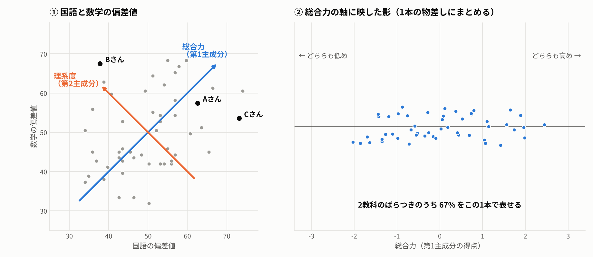
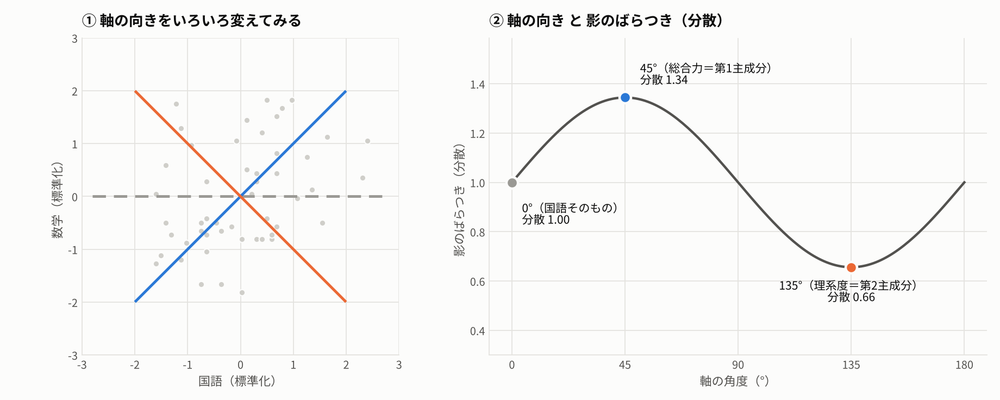
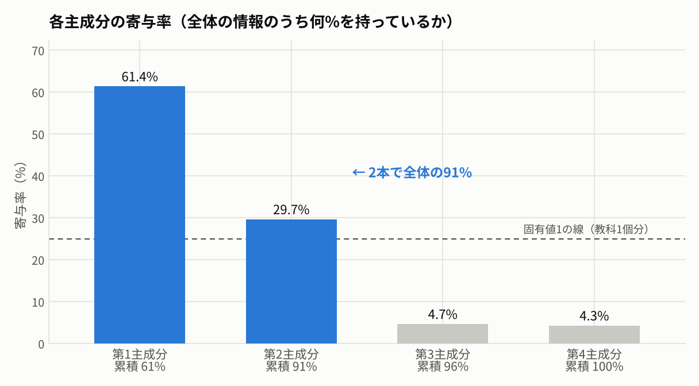
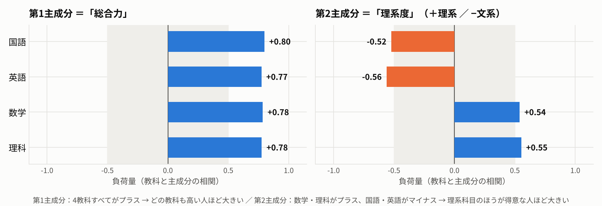
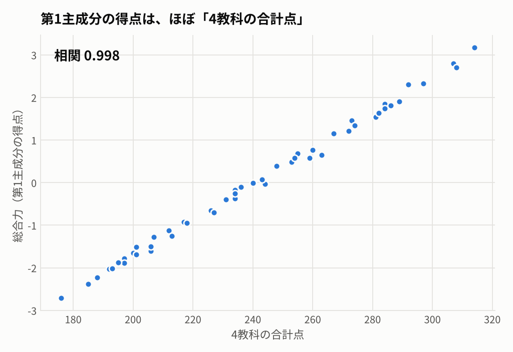
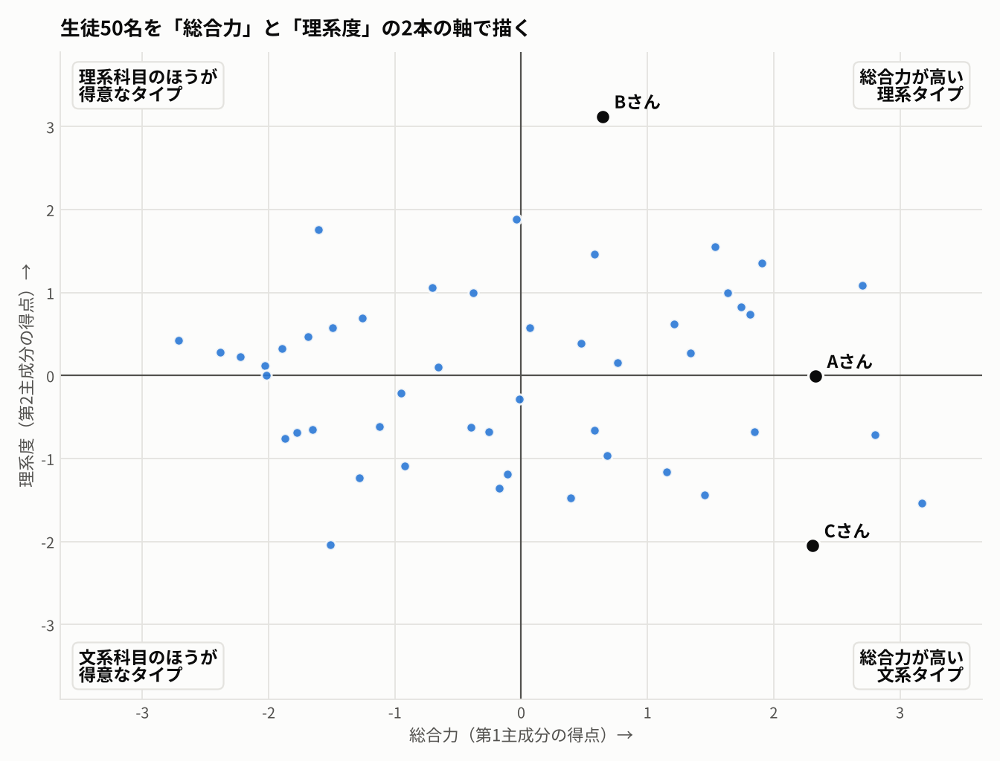

11. 主成分分析とは？
たくさんの項目を、情報をなるべく失わずに少数の軸にまとめる ― テストの点数で考える
11.1. 1. どんな問題を解くのか
ある学年50人の、国語・英語・数学・理科のテストの点数があります。 4教科の点数を並べても、「この生徒はどんなタイプか」を一言で言うのは意外と難しいものです。
ふだん私たちは、無意識に2つの物差しで生徒を見ています。
総合力 ― 全体的にできるか（合計点が高いか）
理系か文系か ― 数学・理科と、国語・英語のどちらが得意か
主成分分析は、この「物差し」をデータから計算で見つける手法です。 4教科（4本の軸）を、情報をなるべく失わずに2本の軸にまとめます。

国語と数学の偏差値を散布図にすると、右上がりに散らばっています（両方できる人は両方できる）。 この斜めの向きが「総合力」、それと直角の向きが「理系度」です。 総合力の1本だけで、2教科のばらつきの67%を表せます。
11.2. 2. クラスタリングとの違い
クラスタリング |
主成分分析 |
|
|---|---|---|
何をまとめるか |
人（行） を似たものどうしのグループに |
項目（列） を少数の軸に |
結果 |
各人にグループ番号がつく |
各人に軸ごとの得点がつく |
学校の例でいうと |
「理系グループ」「文系グループ」に分ける |
「総合力」「理系度」という物差しを作る |
問い |
「どんなタイプの生徒がいるか」 |
「4教科の点数は、結局何を測っているのか」 |
主成分分析で軸を2本に減らしてから、その得点でクラスタリングする、という組み合わせもよく使われます。
11.3. 3. 考え方：一番ばらつく向きを探す
散布図にいろいろな向きの軸を引き、点をその軸に映した「影」のばらつき（分散）を測ります。

0°（国語の軸そのもの）の分散は 1.00
45°の軸で分散が 1.34 と最大 → これが 第1主成分（総合力）
それと直角の 135°で 0.66 と最小 → これが 第2主成分（理系度）
影のばらつきが大きいほど、生徒どうしの違いがよく残っている＝情報が多く残っているということです。 主成分分析は「一番情報が残る向き」を第1主成分とし、それと直角な向きの中で一番情報が残る向きを第2主成分とします。
4教科になっても考え方は同じです。4次元の空間で、一番ばらつく向きを順に探します。
11.4. 4. 出てくる4つの数字
用語 |
意味 |
この例では |
|---|---|---|
固有値 |
その主成分の影のばらつき（分散）。大きいほど情報が多い |
総合力 2.45、理系度 1.19 |
寄与率 |
全体の情報のうち、その主成分が持っている割合（固有値÷教科数） |
総合力 61.4%、理系度 29.7% |
主成分負荷量 |
各教科と主成分の相関。名前をつけるときに使う |
下の 6 章 |
主成分得点 |
各生徒をその軸に映した位置 |
下の 7 章 |
標準化した点数で計算すると、固有値は合計すると教科数（ここでは4）になります。 だから 固有値が1より大きい主成分は「教科1つ分より多くの情報を持っている」 と読めます。
11.5. 5. 何本の主成分を使うか

目安は3つあります。
累積寄与率が 70〜80% に届くまで — この例では2本で91%
固有値が1以上の主成分 — 点線（教科1つ分）を超えているのは第1・第2主成分の2本
名前がつけられるか — 意味を説明できない主成分は使いにくい
第3・第4主成分は合わせても9%しかありません。 これは「国語は得意だが英語は苦手」のような、教科ごとの細かいクセの部分です。
11.6. 6. 主成分に名前をつける
主成分分析が出すのは「第1主成分」「第2主成分」という番号だけです。 負荷量を見て、その軸が何を測っているのかを人間が名付けます。

第1主成分：4教科すべてが +0.8 前後 → どの教科も高い人ほど大きくなる ＝ 「総合力」
第2主成分：数学・理科が +0.5 台、国語・英語が −0.5 台 → 数学・理科のほうが得意な人ほどプラス、国語・英語のほうが得意な人ほどマイナス ＝ 「理系度」
第1主成分は、ほぼ 4教科の合計点そのもの です。

相関は 0.998。それなら合計点で十分では？と思うかもしれません。 主成分分析の価値は、合計点からは出てこない第2の物差し（理系度）まで、データから自動で見つけてくれるところにあります。
11.7. 7. 結果の読み方：全員を1枚の地図に
各生徒の総合力（第1主成分得点）を横軸、理系度（第2主成分得点）を縦軸にとると、4教科の点数を持つ50人が1枚の散布図に収まります。

印をつけた3人を見てみます。
生徒 |
国語 |
英語 |
数学 |
理科 |
合計 |
総合力 |
理系度 |
地図の上では |
|---|---|---|---|---|---|---|---|---|
Aさん |
75 |
71 |
69 |
82 |
297 |
+2.3 |
0.0 |
右側の真ん中：まんべんなくできる |
Bさん |
49 |
44 |
82 |
88 |
263 |
+0.6 |
+3.1 |
上：はっきりした理系 |
Cさん |
86 |
82 |
64 |
60 |
292 |
+2.3 |
−2.1 |
右下：総合力の高い文系 |
AさんとCさんは合計点がほぼ同じ（297点と292点）なのに、地図の上では縦に大きく離れています。 合計点という1本の物差しでは「同じくらいの生徒」に見える2人が、2本目の物差しを足すと別のタイプだと分かります。
4つの象限に名前をつけると、たとえば進路指導や補習クラス分けの議論に使えます。
11.8. まとめ
主成分分析は、連動する項目を、情報をなるべく失わずに少数の軸にまとめる手法
第1主成分は 「影のばらつきが一番大きい向き」、第2主成分はそれと直角で次に大きい向き
テストの例では、第1主成分＝総合力（≒合計点）、第2主成分＝理系度
本数は 累積寄与率・固有値1・名前がつくか で決める
出てくるのは番号だけ。負荷量を見て名前をつけ、得点の地図で一人ひとりを読み解くまでが分析